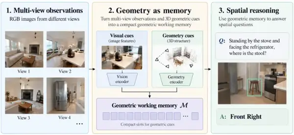

Spatial reasoning / Memory
GaMe
Geometry as Memory for Multi-View Spatial Reasoning
Under review · ICRA 2027
Give spatial reasoning a geometric working memory.
TL;DRA compact geometric memory combines evidence across views and augments the original visual–language context for spatial question answering.

Overview
A geometric reference across views.
GaMe investigates geometry as a working memory for multi-view spatial reasoning. Rather than replacing the original visual–language context, a 16-slot memory gathers geometric evidence across views and supplies an additional source of spatial context.
The approach
Multiple views. A shared spatial context.
01
Gather evidence
Combine visual and geometric information across views.
02
Form a memory
Condense the evidence into 16 working-memory slots.
03
Augment reasoning
Keep the original visual–language context alongside the memory.
Materials
Project resources
This page currently presents the project overview. A public manuscript and evaluated examples have not been posted here.